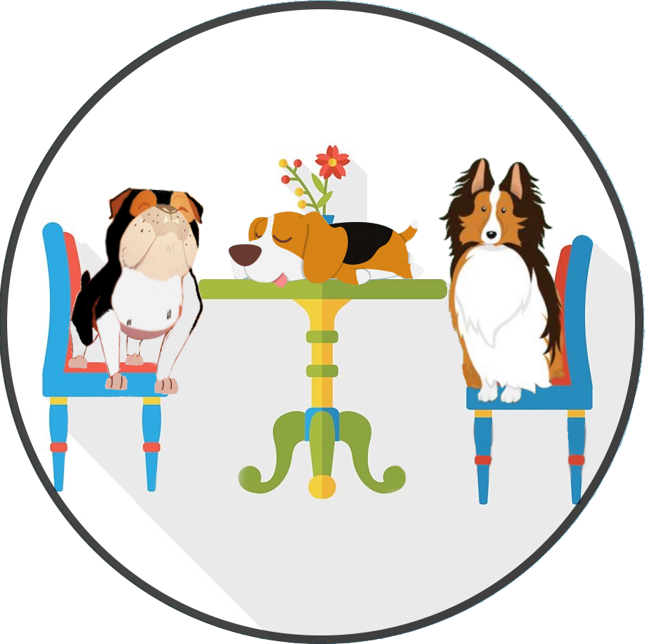

<!--
  Generated template for the TablePage page.

  See http://ionicframework.com/docs/components/#navigation for more info on
  Ionic pages and navigation.
-->

<ion-content padding class="bg">
    <ion-col style="text-align: center;">
        <ion-grid >
          <ion-row>
            <ion-col>
             
            </ion-col>
          </ion-row>
          <ion-row>
            <ion-col>
              <h1 id="parrafo-login" class="fuente">{{mensaje}} <br>{{mesa}}</h1>
            </ion-col>
          </ion-row>
        </ion-grid>
      </ion-col>
      <ion-fab left bottom>
        <button ion-fab navPop class="botones"><ion-icon name="arrow-back"></ion-icon></button>
      </ion-fab>
</ion-content>
